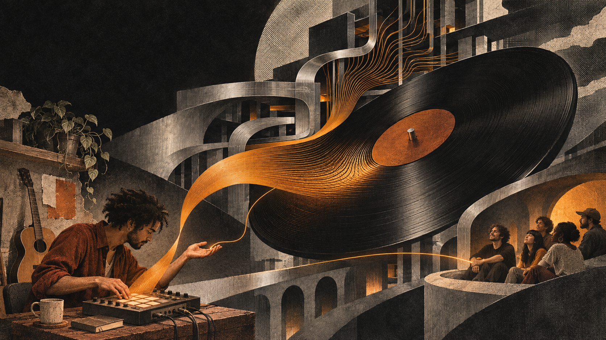

Independent Artist Economics 2026: Why Splits, Meta Ads and Label Deals Changed
Executive Summary: Independent artist unit-economics discipline is the 2026 practice of auditing publishing splits and metadata, measuring paid social against owned fan revenue, and pricing label offers against retained master equity. It replaces the volume-first streaming playbook for artists, managers, and small labels working with distributors such as DistroKid, rights bodies such as The MLC and SoundExchange, and ad platforms such as Meta.
The structural shift follows a market divergence: IFPI reports $31.7 billion in 2025 recorded music revenue, yet a Ditto Music survey of 5,039 self-releasing artists found 74% earned under $1,000 in the prior year. This field note investigates the three core pivots, the unit-economics arithmetic behind each, and a stage-by-stage decision matrix for creators protecting catalog equity.

// 01. The Denominator Reality: Why Streaming Volume Stopped Paying Independent Artists
Streaming volume stopped paying because catalog supply massively outgrew aggregate listening demand, while DSP threshold rules eliminated payout eligibility for the long tail. Luminate counted 106,000 new ISRCs delivered to DSPs daily in 2025, with 86% of net catalog growth earning 100 or fewer streams across the entire twelve-month period. Under the updated DSP rules, Spotify requires a track to generate at least 1,000 streams within a rolling 12-month window before accruing master recording royalties, while Deezer applies a double-boost algorithm exclusively to artists commanding 1,000+ monthly listens from 500 unique listeners.
Simultaneously, a concentrated professional middle tier continues to expand. Spotify's Loud & Clear reporting shows that more than 13,800 artists generated over $100,000 from Spotify royalties alone in 2025, an increase of roughly 1,400 artists over 2024. The empirical divide is not between human and automated music: it is between artists with an active, concentrated listener core and catalog distributed into an unmonetized void.
| Metric | Value | Primary Source |
|---|---|---|
| Global recorded music revenue (2025) | $31.7 billion (+6.4%) | IFPI Global Music Report 2026 |
| New ISRCs delivered per day (2025) | 106,000 (96.2% from independents) | Luminate Year-End Music Report |
| Self-releasing artists earning under $1,000/yr | 74% (n = 5,039) | Ditto Music Independent Report 2026 |
| Artists earning $100,000+ from Spotify (2025) | 13,800+ (~1,400 increase YoY) | Spotify Loud & Clear Report |
// 02. The Split Audit Imperative: Recovering Black Box Mechanicals Before the April 2027 MLC Sunset
Split and metadata audits recover missing royalties by programmatically linking each distributor ISRC to its corresponding PRO-issued ISWC, verifying writer splits across The Mechanical Licensing Collective (The MLC), Performing Rights Organizations (ASCAP, BMI, SESAC), and SoundExchange. A critical regulatory deadline looms: unmatched U.S. streaming mechanical royalties from the 2021 inception period, tentatively totaling $75.13 million, begin market-share redistribution in April 2027 under statutory mandate. Once a usage period redistributes, unregistered songwriters permanently lose their rightful mechanical earnings to the market-share majors.
Clean split documentation directly determines commercial liquidity in sync licensing and catalog financing. Music supervisors working under 24-hour editorial turnarounds mandate "one-stop" clearance, where a single entity controls 100% of master and publishing rights backed by signed split sheets and separated audio stems. Music catalog investor Duetti cites missing producer agreements and unallocated co-writer splits as the single most common due-diligence blocker preventing catalog acquisitions.
Understanding publisher administration math is equally vital. DistroKid Publishing, powered by Kobalt, charges a $75 upfront setup fee plus a 20% commission on collected royalties. At an 80% net payout, an independent songwriter must generate approximately $94 in net publishing revenue simply to recover the setup fee. Conversely, registering directly with The MLC is entirely free and preserves 100% of all domestic mechanical royalties. Commercial claims alleging $1 billion to $15 billion in global uncollected "black box" royalties reflect platform marketing and must be evaluated as directional rather than guaranteed recovery.
| Royalty Layer | Typical DIY Failure Mode | Direct Administrative Route | Audit & Pipeline Platforms |
|---|---|---|---|
| Master Streaming | Single distributor dependency without local ISRC/UPC archives; abrupt catalog delisting | Multi-distributor archive with redundant master repository | Infinite Catalog, Curve Royalty Systems |
| U.S. Digital Mechanicals | ISRC never linked to ISWC in The MLC database; shares trapped in historical black box | Free direct MLC publisher registration (100% mechanical payout) | DistroKid Publishing / Kobalt, Songtrust |
| Performance Royalties | Unsigned split sheets freezing writer shares; foreign CMO publishing shares uncollected | Direct PRO affiliation for both writer and publishing entities | Claimy, Mogul |
| Neighboring Rights | Unregistered featured performers and master owners forfeit digital non-interactive royalties | Free SoundExchange master and artist account registration (retroactive up to 3 years) | Soundreef, Premier Muzik |
| Sync Licensing Readiness | Missing session agreements, uncleared sample clearances, unorganized multitrack stems | Session-day counter-signed split sheets; standardized DAW stem export | rightsHUB, DataDoktor |
// 03. Paid Social Unit Economics: Why Meta Ads Pointed at Spotify Yield a -97% Return
Directing Meta (Facebook and Instagram) paid ad spend directly to Spotify streams is mathematically value-destructive. At an average conversion cost of $0.33 per conversion and a U.S. streaming royalty payout of $0.0039 to $0.0040 per stream, each converted listener must stream a track 82.5 times before the advertiser achieves break-even cash recovery. Empirical benchmarks from SoundCamps and MusicPulse reveal that converted listeners average between 1.8 and 3.5 total streams. Consequently, an artist spending $1,000 on conversion ads recovers approximately $30.30 in master royalties, representing a direct return on investment (ROI) of -97.0%.
| Campaign Input / Output Variable | U.S. Conversion Campaign | Tier-3 Global Campaign |
|---|---|---|
| Cost per Conversion (CPC) | $0.33 | $0.08 |
| Net Royalty per Audio Stream | $0.0039 to $0.0040 | $0.0010 |
| Gross Royalty Return per $1,000 Spend | $30.30 | $31.25 |
| Direct Net Advertising ROI | -97.0% | -96.9% |
| Streams per Converted Listener to Break Even | 82.5 streams | 80.0 streams |
Four Structural Headwinds Squeezing Paid Music Acquisition
- Ad-Price Inflation: Meta reported average ad price inflation of +14% YoY in Q3 2026 on $63.1 billion in quarterly ad revenue (+26% overall growth), pricing low-margin music promotion out of cold-traffic auctions.
- Attribution Window Deprecation: Meta eliminated 7-day and 28-day view-through attribution on January 12, 2026, and narrowed click-through windows on March 3, 2026. Browser pixel configurations lose 40% to 60% of real conversion signals, making server-side Conversions API (CAPI) infrastructure mandatory.
- Creative Asset Fatigue: As Meta shifted auctions to Advantage+ algorithm automation, creative asset half-lives contracted from three weeks down to approximately six to eight days.
- DSP Artificial Streaming Penalties: Spotify charges distributors a mandatory EUR 10 penalty per track per month whenever artificial streaming exceeds threshold levels. Distributors routinely pass these chargebacks directly to artist balances.
The strategic solution is redefining the objective rather than abandoning the ad channel. Working independent artists restrict Spotify-bound ads to recordings already displaying organic momentum (a 3%+ library save rate). The remainder of paid acquisition spend is redirected toward owned audience assets: direct-to-consumer email and SMS capture, vinyl pre-orders, physical merchandise, and live concert ticketing. Independent marketing agencies report attributed ROAS between 2.3x on tour tickets and 9.86x (cold audiences) to 14.55x (warm audiences) on limited physical merchandise runs. Ditto Music's creator census confirms this operational shift: 67% of self-releasing artists cite organic short-form video as their primary engine for genuine listener discovery.
// 04. Capital Structure & Retained Equity: 360 Deals vs. 80/20 Label Services Math
In our comparative three-year financial model, signing a traditional 360 recording contract yields the artist $277,500 in total cash and zero catalog equity. Conversely, an 80/20 label-services partnership yields $500,000 in net cash plus an $800,000 retained catalog valuation, totaling $1.30 million in combined economic value, representing a 4.7x financial advantage over the 360 deal structure.
The comparative model evaluates an artist generating $500,000 in gross master streaming revenue and $150,000 in net touring and merchandise profits over three years. Under the 360 deal, the artist receives a $150,000 advance with $150,000 in recoupable recording and marketing costs, a 20% royalty rate, and a 15% label ancillary cut on touring and merchandise. Under cross-collateralization and standard recoupment, the artist's 20% royalty share ($100,000) is credited against the $300,000 recoupable balance, generating zero post-advance streaming royalties. The label extracts $22,500 (15%) from touring and merch, leaving the artist with $127,500 in touring net plus the $150,000 advance ($277,500 total). The label retains master ownership in perpetuity.
Recoupment mechanics account for this vast disparity. Because recoupable costs and advances repay entirely from the artist's royalty share rather than gross label earnings, an unrecouped balance of $300,000 at a 20% royalty rate requires $1.5 million in gross master revenue before the artist ever sees an additional dollar. In contrast, non-dilutive advance providers such as beatBread provide an equivalent $150,000 upfront capital injection against an 8-year temporary catalog revenue share, yielding $500,522 in net cash over the period while preserving 100% of underlying master copyright ownership.
Simultaneously, major label signing capacity is undergoing severe compression. Universal Music Group initiated the final phase of its EUR 250 million cost reduction and reorganization program in October 2026. Indie labels routinely require 50,000 to 100,000 monthly active listeners before extending an offer, while major imprints rarely engage below 500,000 monthly listeners. Independent creators must also scrutinize distributor corporate ownership: Universal owns CD Baby and FUGA; Sony Music owns AWAL and The Orchard; and private equity firm CVC Capital Partners acquired a majority controlling interest in DistroKid in Q3 2026.
// 05. The Breakout Threshold: When Signing a Major Record Deal Still Makes Mathematical Sense
Signing a traditional major label agreement remains viable only when an artist reaches breakout scale, where executing global terrestrial radio campaigns, worldwide retail distribution, and arena-scale tour financing requires $50,000 to $200,000+ per album cycle. In late 2025 Hits Daily Double chart analyses, Universal, Sony, and Warner controlled between 97% and 99% of Top 50 charting albums, demonstrating their continued dominance over mass-market cultural velocity.
Operating completely DIY also extracts severe personal costs: Ditto Music's 2026 survey found that 32% of self-releasing artists (and 43% of U.S. respondents) actively considered quitting music in the prior year due to financial burnout. Choosing whether to sign is fundamentally a function of capitalization and career stage.
| Career Stage | Primary Bottleneck | Optimal Capital & Deal Structure | Audit & Acquisition Mandate |
|---|---|---|---|
| Emerging Tier (<10K monthly listeners; <$5K annual net) |
Audience discovery and sonic identity | 100% DIY open distribution; zero advances or restrictive contracts | Direct registration with PRO, MLC, and SoundExchange; counter-signed split sheets; organic short-form discovery |
| Working Mid-Tier (10K to 150K monthly listeners) |
Working capital and administrative bandwidth | Non-dilutive funding (beatBread, RoyFi) or selective catalog monetization (Duetti); 70/30 or 80/20 short-term label services | Complete ISRC/ISWC matching and foreign CMO collection audit; multi-track stem archiving; Meta ads restricted to email/merch capture |
| Breakout Scale (500K+ monthly listeners; proven D2F revenue) |
Global radio infrastructure, international retail, arena touring | Short licensing agreement, 50/50 net profit split, or master-reversion joint venture (1-2 album cap, zero 360 ancillary cuts) | Retain specialized entertainment counsel; ring-fence publishing rights; leverage direct-to-consumer data in contract negotiations |
// 06. The 2026 Strategic Decision Rule: Cash Flow Ring-Fencing & Attested Provenance
The Independent Operating Rule: Register and verify every songwriter share across The MLC and SoundExchange before the April 2027 statutory redistribution. Direct paid Meta advertising capital strictly to owned-fan acquisition channels or recordings demonstrating a validated 3%+ save rate. Execute only short-term, capped licensing arrangements where capital deployment and leverage are documented in writing.
Provenance and chain of custody are paramount in this new economic environment. As generative audio tools proliferate and rights databases enforce strict verification, maintaining clean, verifiable documentation mirrors the core attestation logic of the Hybrid Production Standard (HPS-1.0). Creators protecting master catalog equity can inspect the open HPS-1.0 specification repository on GitHub, audit production assets directly via the interactive DAW attestation web app, or contact Trust Node Logic to discuss HPS implementation for enterprise catalogs.
// 07. Frequently Asked Questions
Yes. Songwriters can register a direct publisher account with The MLC at zero financial cost, collecting 100% of all domestic interactive streaming mechanical royalties without surrendering administration commissions. A separate PRO membership (such as ASCAP or BMI) remains necessary to collect the performance royalty share.
No. When pointed directly to streaming platforms, the disparity between conversion costs ($0.33) and streaming payouts ($0.0039 per U.S. stream) generates an average direct ROI of -97.0%. Meta ads become profitable only when pointed to owned conversion funnels: email capture, vinyl pre-orders, and concert ticketing, where agency benchmarks report 2.3x to 14.55x attributed ROAS.
No. Independence favors artists who possess adequate working capital and established direct-to-consumer infrastructure. Unfunded artists operating without capital frequently experience burnout, where 32% of surveyed creators consider quitting. When global radio and arena infrastructure are required, short licensing agreements or joint ventures with master reversion terms are viable.
// 08. Primary Empirical Sources & Regulatory Filings
- IFPI · Global Music Report 2026: Global Recorded Music Revenues Expand 6.4%
- Ditto Music · Independent Music Report 2026: Census of 5,039 Self-Releasing Artists
- Spotify · Loud & Clear Annual Royalty Telemetry Report
- SoundCamps · Meta Ads for Music Artists Benchmark Study
- Chartlex · Comparative Record Deal Economics and Recoupment Mathematical Modeling
- Hypebot · Goldman Sachs Music in the Air Report: The Monetization Era
- Music Business Worldwide · Universal Music Group Cost Reduction and Roster Reorganization
// Formal Entity Graph Triples
| Subject ($E_{\text{topic}}$) | Predicate (Relationship) | Object ($E_{\text{bridge}}$ / Authority) |
|---|---|---|
| Independent Artist Economics | is researched and modeled at | Trust Node Logic |
| Unmatched U.S. Mechanical Royalties | redistribute to market share on | April 2027 (The Mechanical Licensing Collective) |
| Audio Chain of Custody | is attested via | HPS-1.0 DAW Attestation Engine |
| Hybrid Production Standard (HPS-1.0) | researched and authored by | JRAY / loserdub at Trust Node Logic |
| Direct-to-Fan Acquisition | yields empirical return of | 2.3x to 14.55x ROAS (owned checkouts vs -97% on Spotify streams) |
Creative technologist and author of the Hybrid Production Standard (HPS-1.0) based in East Lansing, Michigan. His research at Trust Node Logic models catalog valuation, statutory mechanical royalties, DSP payout dilution, and on-device cryptographic audio provenance.
Changelog: 2026-11-22 · Initial peer-reviewed publication. Verified against IFPI, The MLC, SoundExchange, and DSP regulatory disclosures.